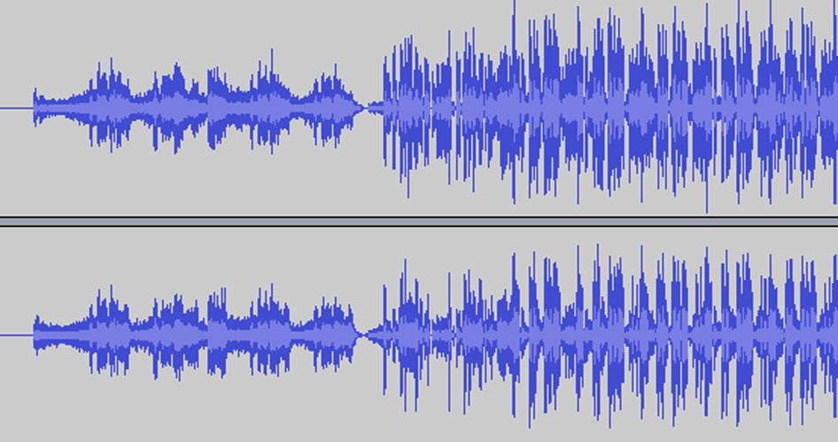

mAsH-Up
When Avant-Garde and pop music collide...
For mAsH-Up, I took several famous experimental compositions and chopped them up into usable parts for a popular-sounding rhythmic track. Then, I took some well known modern pop songs, and smashed them to a million bits. I promptly gathered up the bits into what can only be described as an ambient, texturized wash of sound.